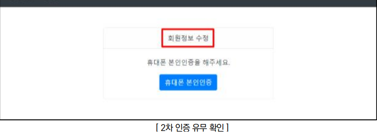
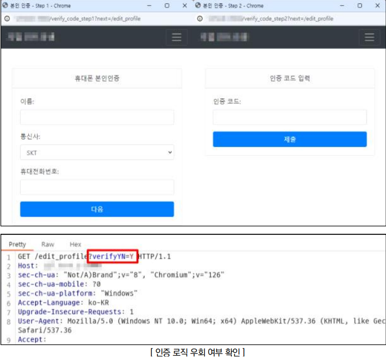

점검 목적
- 중요 페이지 접근 시 추가 인증 절차 존재 여부 및 인증 로직 우회 여부 점검
- 중요 페이지 접근 시 추가 인증 절차를 도입하고, 서버 사이드에서 인증 여부를 검증하여 불필요한 정보 노출 및 변조를 차단하기 위함
참고
- 웹 소스코드 점검
판단 기준
양호 : 중요 정보 페이지 접근 시 추가 인증 절차가 존재하며, 인증 로직이 서버 사이드에서 구현되어 우회가 불가능한 경우
취약 : 중요 정보 페이지 접근 시 추가 인증 절차가 존재하지 않거나, 인증 로직 우회가 가능하여 비인가자가 접근 가능할 경우
조치 방법
- 중요 페이지에 대한 추가 인증 절차를 도입하고, 서버 사이드에서 인증 여부를 검증하는 로직 구현
점검 방법
Step 1) 중요 정보(개인정보 변경 등) 페이지 접근 시 재인증 절차 존재 여부 확인

Step 2) 로직 변조, 파라미터 변조 등의 행위를 통하여 인증 로직(OTP 인증, 휴대폰 본인인증 등)의 우회 여부 확인

조치 방법
1. 중요 정보를 다루는 페이지에 접근 시 본인인증을 재확인하는 로직을 구현하고, 사용자 승인 여부를 페이지마다 검증
2. 인증 과정을 처리하는 로직 구현 시 클라이언트 사이드 방식으로 구현할 경우 사용자가 임의로 인증 과정에 대한 우회가 가능하므로 서버 사이드 방식을 이용하여 구현
3. 접근 통제 코드는 구조화되고 모듈화되어야 하며, 모든 페이지에 로그인 및 권한 체크 기능을 구현하고 공통 모듈 사용 권장